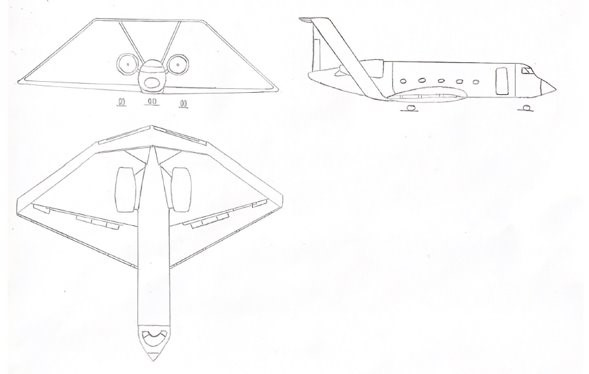

AB22

AEROIB ha desarrollado el AB22, una aeronave de transporte de pasajeros con diferentes innovaciones que ayudan al medio ambiente, destacando entre estas el empleo de biocombustibles.
Además, también se ha recogido nuestro progreso en el desarrollo de la aeronave AB22, siguiendo las entregas exigidas en la asignatura Ampliación de Cálculo de Aviones del primer curso del máster de Ingeniería Aeronáutica en la Universidad Politécnica de Valencia.
Se creó nuestro equipo y se definió nuestra misión: diseñar un avión que sea respetuoso con el medio ambiente.
Se analizaron los aviones en el mercado con características similares a la aeronave que se pretendía diseñar. Además se incorporó la imagen corporativa a las presentaciones.
Se realizaron los primeros bocetos.
Se estimaron los pesos de la aeronave por primera vez. Para ello se desarrolló código que se puede consultar en el repositorio.
Se trazó la polar del avión y se introdujeron dispositivos hipersustentadores.
Se trazó el diagrama PL-R.
Se comprobó la estabilidad de la aeronave y se trazó el diagrama de maniobra.